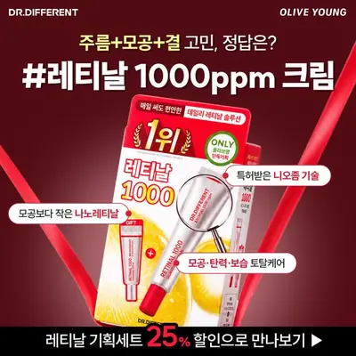
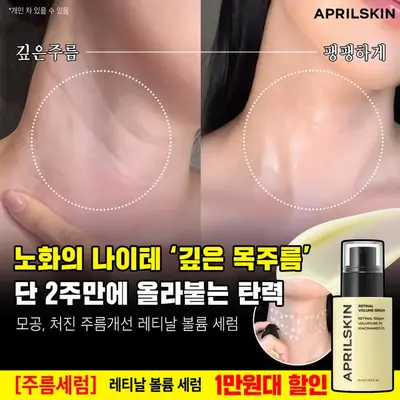
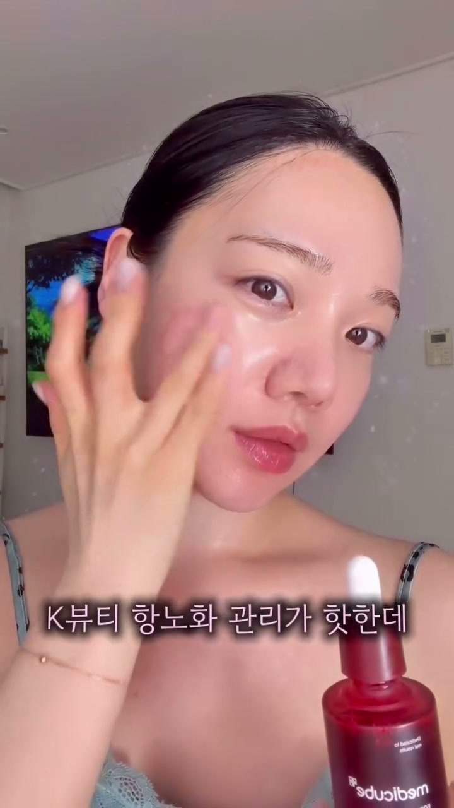
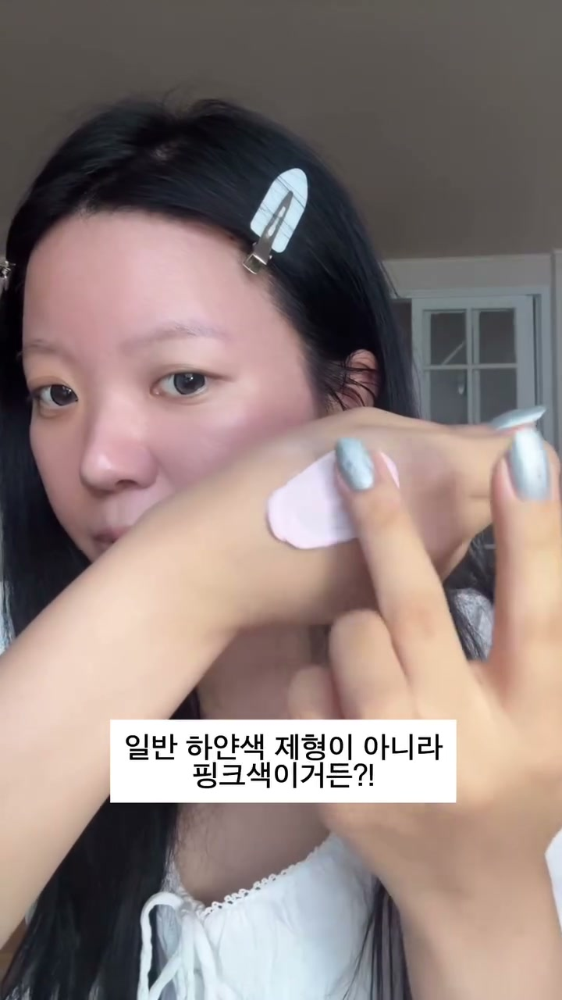
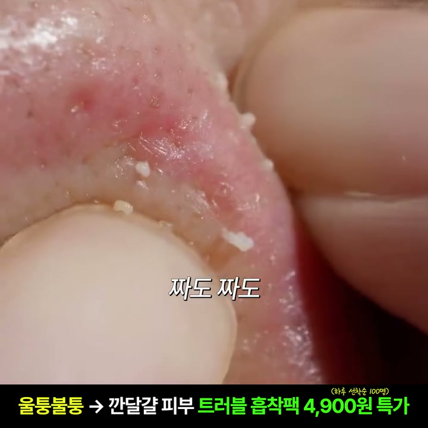
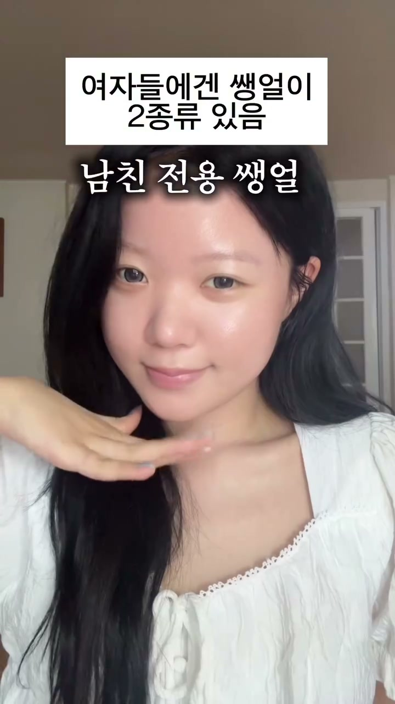
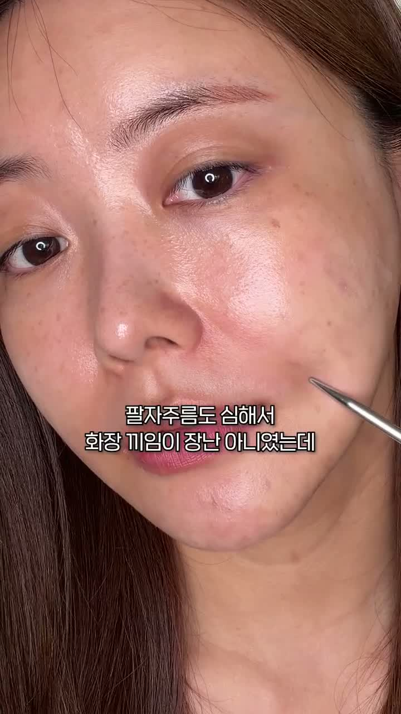
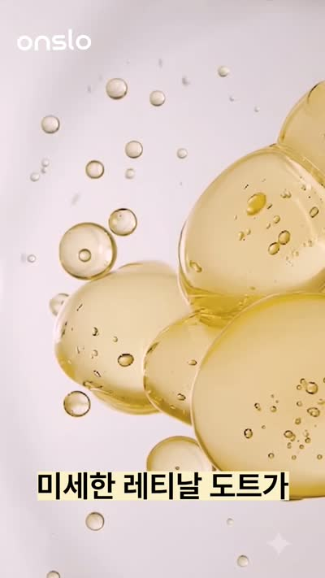
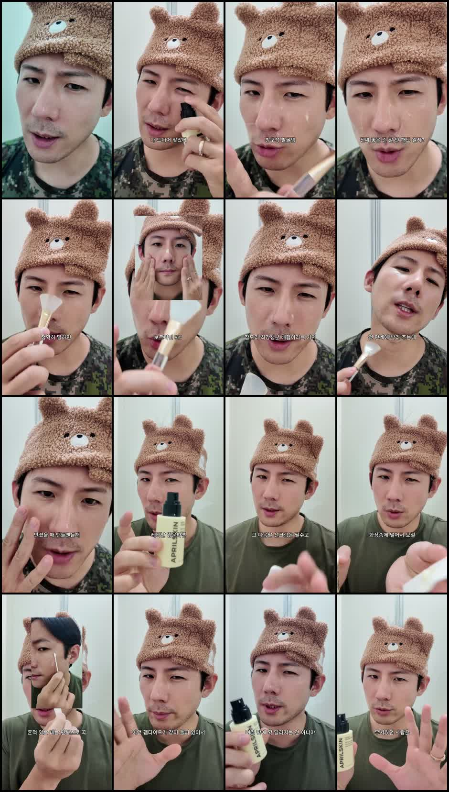

함량
닥터디퍼런트1000ppm · 최고함량 레티날
온그리디언츠레티날 0.2%
GLOWDERM RESEARCH
핵심 키워드와 실제 광고 이미지를 함께 봅니다.
레티날 · 주름 · 탄력 · 흔적 · 수면 톤업
닥터디퍼런트1000ppm · 최고함량 레티날
온그리디언츠레티날 0.2%
온그리디언츠바르는 9만 샷
셀리맥스레티날 샷 듀얼 크림
닥터디퍼런트주름 + 모공 + 결
온그리디언츠모공 탄력
닥터디퍼런트

광고 원본 ↗온그리디언츠
 광고 원본 ↗
광고 원본 ↗닥터디퍼런트
 광고 원본 ↗
광고 원본 ↗셀리맥스
 광고 원본 ↗
광고 원본 ↗에이프릴스킨

광고 원본 ↗검색어를 바꾸거나 필터를 초기화해 보세요.
레퍼런스 103개. 브랜드별 핵심 키워드와 실제 광고 장면을 비교할 수 있어요.
BP KEYWORDS
BP 누적 시트의 130개 키워드를 소구별로 모았습니다.
컬러플레이 · 메디큐브

빨간 용기·제형·얼굴 도포를 반복해서 보여줌.
컬러플레이 · 메디테라피

18초 손등에 핑크빛 제형을 펼쳐 색을 직접 보여줌.
흔적 → 여드름 흔적 · 이옴

첫 컷 압출 → 여드름이 남은 볼 → 반복되는 트러블 고민.
주름·탄력 볼 꺼짐 · 땅콩형 얼굴 · 30대 노처녀
흔적 여드름 흔적으로 구체화하고, 압출·남은 자국을 실제 화면으로 보여주기.

수면 톤업 · 쌩얼 상황을 먼저
기획 연결 남친과 여행 → 가리던 쌩얼 → 메이크업한 것처럼 화사한 톤업.
‘바르고 자도 된다’는 이 상황을 받쳐주는 제품 특징.
원본 장면 메디테라피의 ‘남친 전용 쌩얼’과 여행 상황, 도포 전후 톤 비교.
참고 광고 보기 ↗
새로 활용할 장면 · 메디테라피
팔자주름도 심해서 화장 끼임이 장난 아니었는데
21초 화면 자막과 볼·팔자 접사. 자사에서 아직 사용하지 않은 장면으로, 문제 제기 첫 컷에 활용할 후보입니다.
적용 제안 화장이 끼는 부위를 먼저 짚고 → 피부결 고민 → 국소 케어 루틴으로 연결. 레퍼런스의 구도와 문제 제기를 차용해 자사 장면으로 제작합니다.
21초부터 원본 보기 ↗이옴 · 버블 세럼
메디테라피의 팔자 화장 끼임과 함께 볼 수 있는 문제 제기 장면. 들뜬 부분을 크게 보여준 뒤 기초 케어로 넘어가는 전개입니다.
아래 따옴표는 경쟁사 원문이다. 광고 성과를 입증하거나 우리 제품 효능으로 확정한 문구가 아니다. 수치·함량·랭킹은 해당 경쟁사 제품의 표현으로 기록한다.
닥터디퍼런트주름은 싹, 탄력은 쫙원본 보기 ↗크림 · 효과 단정·최상급 표현
화면 연출 빨간 패키지와 주름·탄력 두 줄 대형 카피를 결합.
자사 적용 주름과 탄력을 두 박자로 대조하는 첫 2초 카피, 제품+대형 글자 정지 소재
크림 · 복합 고민·함량 강조
화면 연출 세 고민을 질문으로 묶고 제품과 레티날 그래픽을 제시.
자사 적용 세 고민을 한 화면에서 짚고 제품으로 전환하는 문제 묶음
 셀리맥스저녁에 바르고 자면 끝원본 보기 ↗
셀리맥스저녁에 바르고 자면 끝원본 보기 ↗크림 · 간편·완결 표현
화면 연출 욕실 도포에서 침대·수면 루틴으로 전환.
자사 적용 밤 도포→수면→아침 확인의 시간 흐름
셀리맥스2년을 기다린 레티날 듀얼 크림원본 보기 ↗크림 · 대기 기간·순위 강조
화면 연출 튜브를 반복 배열하고 출시 카피를 크게 배치.
자사 적용 개발·대기 서사형 출시 소재. 우리 실제 개발 이력이 있을 때 해당 기간 사용
온그리디언츠레티날 0.2%, 바르는 9만 샷원본 보기 ↗세럼·부스터 · 수치·시술 연상
화면 연출 인물·튜브 옆에 0.2%와 9만 샷을 대형 글자로 노출.
자사 적용 함량과 샷 이미지를 결합하는 시술 연상형. 자사 수치·전달기술 확인 항목으로 등록
세럼 · 고민 별명·짧은 기간 변화
화면 연출 목주름 전후를 좌우로 나누고 같은 부위를 원으로 표시.
자사 적용 목주름 부위를 먼저 보여주고 고민을 별명으로 기억시키는 부위형
 셀리맥스관리실에서 집으로 이어지는 루틴원본 보기 ↗
셀리맥스관리실에서 집으로 이어지는 루틴원본 보기 ↗부스터 · 함량·고농축 표현
화면 연출 첫 컷 관리실 핸드피스 → 12초 이마·볼에 소량씩 점도포 → 38초 목 부위를 랩으로 감싼 밀착 연출. 랩 감싸기는 자사 초기에 사용했던 방식으로, 신규 제안에서는 제외.
자사 적용 관리실 컷→집에서 바르는 루틴으로 이어지는 시술 후 관리 서사

온슬로잠든 사이 미간 패치원본 보기 ↗패치 · 주름 삭제 비유
화면 연출 미세 도트 그래픽 → 수면 중 미간 패치 → 아침 제거.
자사 적용 지우개 별명과 수면 기록 포맷의 결합. 패치 부착 동작은 크림 레퍼로 혼동하지 않음
조사 결과: ‘주름 지우개’ 정확 일치 사례는 이번 확인 범위에서 패치였다. 얼굴용 레티날 크림의 직접 사례로 바꾸어 보고하지 않는다. 크림에서는 주름·탄력 대조, 함량, 숙면 루틴이 실제로 확인됐다.
메디테라피 공식 크림 상세는 요철·매끈함을 전면에 두고, 닥터디퍼런트 공식 상세는 레티날 함량·리포솜·주름·탄력을 설명한다. 같은 레티날도 제품별 중심 고민이 다르다. 메디테라피 공식 상세 · 닥터디퍼런트 공식 상세

셀리맥스 · 부스터
셀리맥스 광고 첫 장면: 누운 얼굴에 핸드피스 접촉, 이어서 집에서 노란 제형 점도포
자사 적용 관리받는 상황 1컷→같은 고민 부위의 홈케어 컷
관리실 장면과 자사 도포 장면을 각각 신규 제작. 기기 효과를 크림 결과로 연결하지 않음
광고 원본 ↗
메디테라피 · 세럼
메디테라피 광고 초반: 눈밑 주름을 금속 도구 끝으로 가리킴
자사 적용 손끝·둥근 도구로 고민 부위를 정확히 보여주는 접사
눈밑을 찌르는 동작이 아니라 위치를 짚는 화면
광고 원본 ↗셀리맥스 · 부스터
12초: 이마·볼에 제형을 조금씩 짠다. 38초: 목 부위를 랩으로 감싼 모습을 보여준다.
자사 적용 랩 감싸기는 자사 초기에 사용했던 연출. 신규 포맷으로 추천하지 않고 원본 참고로 보관.
원본 화면 문구: 흡수 깊이 7~8배 ↑ / 탄력 개선 체감.
광고 원본 ↗메디테라피 · 세럼
R22의 D-7/D-5/D-3/D-1→Before/After
자사 적용 실제 같은 구도 사용 기록을 짧게 연결
우리 사용 기록 확보가 필요. 타사 변화 장면은 레퍼 캡처로만 사용
광고 원본 ↗
에이프릴스킨 · 세럼
에이프릴스킨 광고 후반: 흔적 부위에 면봉으로 제품 도포
자사 적용 갈색 흔적 위치→쌀알 도포→손끝 흡수
기미 흔적 시나리오의 동작 레퍼로 우선 적용
광고 원본 ↗R65는 사용법 설명 중간에 관리실 기기 컷을 삽입한다. R83은 기기 컷을 처음에 배치한다. 같은 시술 장면도 시작에 두는지 중간에 두는지에 따라 훅과 증거의 역할이 달라진다. 이번에는 첫 2초 배치와 국소 도포를 따로 테스트한다.
| 축 | 핵심 사례 | 확인한 화면·가져올 요소 | 적용 |
|---|---|---|---|
| 주름·탄력 | 메디큐브 EGF NAD 앰플 7074 원본 열기 ↗ 원본 열기 ↗ |
0초 인물→상하 Before/After→제품→성분→도포. 31.1초 원본 확보 | 기미와 주름을 함께 고민하는 신규 대본의 전개 참고 |
| 중안부 볼 꺼짐 | 메라블 252602 원본 열기 ↗ 원본 열기 ↗ |
볼 꺼짐 원 표시, 상하 비교, 7일·14일 루틴. 34.6초 원본 확보 | 레티날 탄력 출시 소재 후보. 기미크림 볼륨 효과로 전용하지 않음 |
| 중안부 모공 | 피캄 252404 원본 열기 ↗ 원본 열기 ↗ |
볼 중앙 접사, 마스크 제거, 모공 CG 삽입. 31.9초 원본 확보 | ‘중안부’가 무엇을 뜻하는지 화면으로 특정하는 구도 참고 |
| 수면 톤업 | 메디테라피 1152271217148179 원본 열기 ↗ 원본 열기 ↗ |
쌩얼 상황극→도포→Before/After→침대 기상 | 크림_10과 연결. 톤업크림의 즉각 색상 변화와 멜라크림의 사용 기간을 섞지 않음 |
| 기미 흔적 | 프롬메디 1955986465364033 원본 열기 ↗ 원본 열기 ↗ |
볼 기미 지목→튜브→성분→브러시 도포→상하 비교 | 크림_11과 연결, 국소 도포 동작 우선 |
| 트러블 흔적 | 에이프릴스킨 협업 에이프릴스킨 광고 원본 열기 ↗ 원본 열기 ↗ |
생활 공간 셀카·성분 설명·흔적 부위 면봉 | 기미 흔적과 트러블 흔적은 별도 카피로 관리 |
중안부 테스트는 ‘볼이 꺼져 보임’, ‘볼 중앙 모공’, ‘처져 보이는 탄력’ 중 하나를 먼저 고른다. 세 문제를 ‘탱탱’ 한 단어로 묶으면 무슨 장면을 만들어야 하는지 불명확하다. 메라블은 볼륨, 피캄은 모공 중심이다.
우리 촬영은 동일 인물·각도·조명·거리로 기록한다. 위 항목은 비교 화면의 구성 분석이다. 경쟁사 비교 결과의 진위나 자사 개선 효과를 이번 화면 검수로 확인한 것은 아니다.
화장 끼임·들뜸의 실제 접사를 첫 화면에 쓸 후보입니다. 기존 소재에서 빠졌던 문제 화면을 구체적으로 보여줍니다.
메디테라피 · 21초
도구로 끼임 부위를 짚어 시선을 고정.

이옴 · 8초
얼굴 전체 대신 들뜬 피부결을 크게 보여줌.

이옴 · 33초
코 옆·볼의 거친 표면을 정면 접사로 제시.
랩 감싸기는 초기에 사용했던 연출이라 신규 제안에서 제외합니다. 사용 기록·무대사 도포·문답·공병·1인 2역 등 기존 포맷 제안도 새로움이 약해 보류합니다.
이옴 · 트러블 흡착팩
여드름을 짜는 순간을 첫 컷으로 보여주고, 반복되는 트러블과 남은 자국으로 이어갑니다. 여드름 압출과 피부 문제를 숨기지 않는 접사를 참고할 장면입니다.
1순위 · 화장 실패 재현형
파운데이션 도포 → 팔자 끼임·볼 들뜸 접사 → 기초 준비 과정으로 되돌아가기 → 다시 메이크업.
새로 테스트할 것
문제가 생기는 순간을 첫 장면으로 보여주고, 원인을 따라가게 만드는 전개.
가져올 장면
메디테라피 21초의 팔자 끼임, 이옴 8초의 들뜬 베이스. 실패 재현과 되돌아가기 구성은 신규 기획.
후보 · 반쪽 비교 실험형
얼굴 양쪽의 기초 준비를 다르게 → 같은 베이스를 같은 양으로 도포 → 팔자·볼을 한 화면에서 비교.
새로 테스트할 것
설명 대신 좌우 차이를 직접 보게 하는 실험. 실제 촬영에서 드러난 차이를 사용.
가져올 장면
이옴 7·8초의 기초 겉돎과 베이스 접사. 좌우 실험은 원본에 없는 신규 기획.
후보 · 시간 경과 관찰형
화장 직후 → 점심 → 오후, 같은 조명·구도로 팔자와 볼을 접사 촬영 → 끼임·들뜸 변화 확인.
새로 테스트할 것
당일 메이크업이 어떻게 변하는지 결과를 기다리게 만드는 전개. 실제 경과 화면을 사용.
가져올 장면
이옴 8초의 베이스와 33초의 건조한 볼을 촬영 부위 참고로 활용. 시간 경과 구성은 신규 기획.